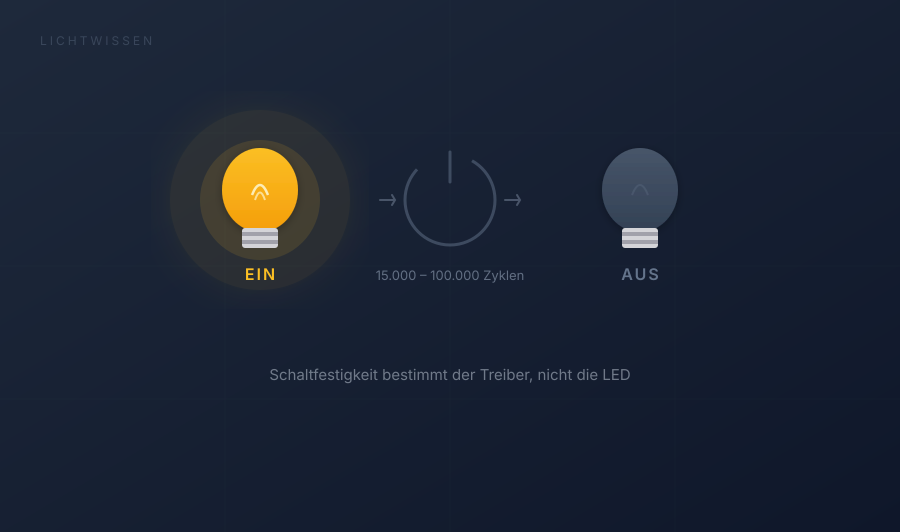

LEDs schalten: Schaltzyklen, Treiber und Haltbarkeit
Wie oft darf man LEDs ein- und ausschalten? Was Treppenhaus-Automaten und Bewegungsmelder für die Haltbarkeit bedeuten — und warum meist nicht die LED, sondern der Treiber das Problem ist.

Schalten war schon immer ein Thema
Bei Treppenhäusern mit Treppenautomaten oder bei Bewegungsmeldern kennt man aus der Vergangenheit, dass Kompakt-Leuchtstofflampen (Sparlampen) relativ oft kaputt gegangen sind. Es gab damals spezielle Lampen mit der Zusatzbezeichnung „Facility", die wesentlich länger hielten — aber die Haltbarkeit beim Schalten war immer ein Thema.
Die gute Nachricht: LEDs selbst können fast unendlich oft geschaltet werden. Die Begrenzung liegt woanders — nämlich beim Betriebsgerät, dem sogenannten Treiber.
Wie viele Schaltzyklen verkraftet ein LED-Treiber?
Je nach Qualität des Betriebsgeräts sind zwischen 15.000 und 100.000 Schaltzyklen möglich. Ein Schaltzyklus umfasst jeweils ein Einschalten und ein Ausschalten.
Günstige Einstiegsgeräte
Im unteren Bereich — etwa 15.000 Schaltzyklen — sind fast immer günstige Einstiegsgeräte angesiedelt. Für den normalen Hausgebrauch mit etwa drei Schaltungen pro Tag reicht das für eine Haltbarkeit von rund 13 Jahren.
Markengeräte
Den oberen Bereich — 50.000 bis 100.000 Schaltzyklen — machen meist die Markengeräte aus. Diese sind die richtige Wahl für Bereiche mit häufigem Schalten, etwa Treppenhäuser, Eingangsbereiche oder Räume mit Bewegungsmeldern.
Warum sind die Schaltungen begrenzt?
Der Grund liegt beim extrem hohen Einschaltstrom der LEDs. Dieser tritt zwar nur etwa 5 Millisekunden auf, belastet aber die Bauteile im Treiber — besonders die Kondensatoren — thermisch und mechanisch.
Über tausende Schaltungen summiert sich diese Belastung, bis Bauteile ermüden und der Treiber ausfällt. Die LED selbst übersteht das problemlos — es ist die Elektronik, die nachgibt.
Worauf muss ich beim Einsatz achten?
Normaler Hausgebrauch
Bei etwa drei Schaltungen pro Tag kommt man auf rund 1.000 Zyklen im Jahr. Selbst ein günstiger Treiber mit 15.000 Schaltzyklen hält damit über 13 Jahre — länger als die meisten Leuchten in Betrieb sind.
Treppenhaus und Bewegungsmelder
In einem Treppenhaus oder Eingangsbereich mit Bewegungsmeldern oder Treppenhausautomaten sieht das ganz anders aus. Hier wird deutlich häufiger geschaltet — achten Sie auf mindestens 50.000 Schaltzyklen.
Was, wenn keine Angabe auf der Verpackung steht?
Oft gibt es keine Angaben zur Schaltfestigkeit eines Leuchtmittels oder einer Leuchte. Hier hilft eine europäische Ökodesign-Richtlinie:
LED-Leuchtmittel mit einer Lebensdauer von über 30.000 Stunden müssen mindestens 15.000 Schaltzyklen schadlos überstehen — also die Hälfte der angegebenen Stunden der mittleren Lebensdauer. Der tatsächliche Wert liegt meist darüber.
Wenn eine LED kaputt geht — liegt es meist am Treiber
Aus all dem lässt sich ableiten: Wenn eine LED-Leuchte ausfällt, liegt es sehr häufig am Treiber, den man in der Regel einfach austauschen kann.
Seltener ist eine Überhitzung der LED selbst die Ursache — meist bedingt durch eine schlechte Wärmeableitung im Leuchtengehäuse.
Es lohnt sich also, beim Kauf auf die Qualität des Betriebsgeräts zu achten — besonders dort, wo häufig geschaltet wird.
LED-Schalten kompakt
Wie oft kann man eine LED ein- und ausschalten?
Die LED selbst kann fast unbegrenzt oft geschaltet werden. Die Begrenzung liegt beim Betriebsgerät (Treiber): Je nach Qualität verkraftet es zwischen 15.000 und 100.000 Schaltzyklen. Ein Schaltzyklus umfasst jeweils ein Ein- und ein Ausschalten.
Warum gehen LED-Leuchten kaputt, obwohl LEDs so langlebig sind?
Wenn eine LED-Leuchte ausfällt, liegt es sehr häufig am Treiber — nicht an der LED selbst. Der Treiber lässt sich in der Regel einfach austauschen. Seltener ist eine Überhitzung der LED durch schlechte Wärmeableitung die Ursache.
Sind LEDs für Treppenhäuser und Bewegungsmelder geeignet?
Ja, aber achten Sie auf Leuchten mit mindestens 50.000 Schaltzyklen. Günstige Modelle mit nur 15.000 Zyklen sind für häufiges Schalten nicht ausgelegt. Markengeräte im oberen Bereich sind hier die bessere Wahl.
Warum haben LED-Treiber begrenzte Schaltzyklen?
LEDs haben einen extrem hohen Einschaltstrom, der zwar nur etwa 5 Millisekunden dauert, aber die Bauteile im Treiber — besonders die Kondensatoren — thermisch und mechanisch belastet. Über tausende Schaltungen summiert sich diese Belastung.
Woran erkenne ich, wie viele Schaltzyklen eine LED aushält?
Oft fehlt diese Angabe auf der Verpackung. Eine europäische Ökodesign-Richtlinie schreibt vor: LED-Leuchtmittel mit über 30.000 Stunden Lebensdauer müssen mindestens die Hälfte dieser Stundenzahl als Schaltzyklen überstehen — also mindestens 15.000. Der tatsächliche Wert liegt meist darüber.